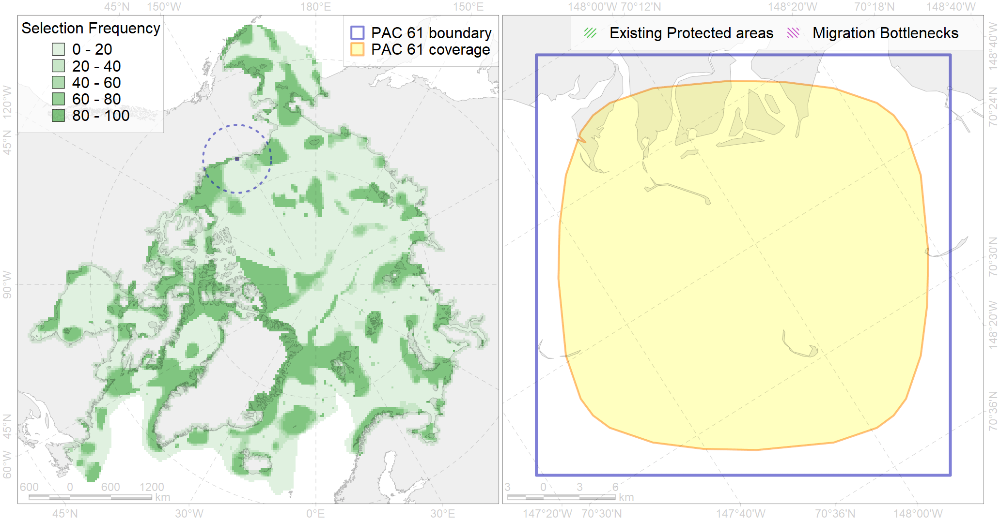

Region 61
Region 61
“ArcNet” scenario 33 achievement for region 61.
Use Accenter for advanced mode.

0
CFs inside of Region completely
1
CFs inside of Region at quarter
1
Complete-targets achievement by Region
1
Half-targets achievement by Region
| CF | Name | Target Achievement for Region | Proportion of Target Achievement in Region | Amount Proportion in Region |
|---|---|---|---|---|
| 7214 | Boulder Kelp Patch in Beaufort Sea (1) | 234.6% | 88.8% | 70.4% |
| 7121 | II.2.1.1. Western Beaufort inner shelf | 18.4% | 10.7% | 4.1% |
| 3005 | Fast Ice distribution in the Beaufort Sea region | 29.4% | 2.7% | 1.8% |
| 9034 | polar bear denning areas of SB (Southern Beaufort Sea) subpopulation | 2.5% | 2.5% | 1.6% |
| 7042 | Beaufirt transitional zone | 3.0% | 0.8% | 0.6% |
| 1017 | Pacific Walrus haulouts | 0.8% | 0.8% | 0.6% |
| 4022 | Feeding area of the Inconnu (Stenodus leucichthys nelma), American populations (F 22) | 1.7% | 1.0% | 0.5% |
| 9016 | polar bear of the SB (Southern Beaufort Sea) subpopulation distribution | 1.3% | 0.6% | 0.4% |
| 6027 | Glaucous gull (Larus hyperboreus barrovianus) breeding grounds | 3.0% | 0.9% | 0.4% |
| 2054 | Spotted seal foraging areas | 2.6% | 0.5% | 0.3% |
| 4016 | Feeding area of the Broad whitefish (Coregonus nasus), Euro-Asian populations F 19 | 0.9% | 0.6% | 0.3% |
| 4009 | Feeding / nursery area of the Arctic Cisco (Coregonus autumnalis), American populations (F 14) | 0.7% | 0.5% | 0.3% |
| 4078 | Fish zoogeography, Arctic Region, High-Arctic Shelf Province, Wrangel – Beaufort District (10E) | 1.4% | 0.5% | 0.2% |
| 2042 | Ringed seal whelping areas in the Beaufort Sea | 0.9% | 0.4% | 0.2% |
| 4019 | Feeding area of the Vendace, Least cisco (Coregonus sardinellа), American populations (F 20) | 0.8% | 0.4% | 0.2% |
| 2005 | Bearded seal whelping areas in the Beaufort Sea | 0.7% | 0.4% | 0.2% |
| 4034 | Feeding area of the Taranetz’s Char (Salvelinus taranetzi) (F 31) | 0.5% | 0.3% | 0.2% |
| 5109 | Bowhead whale of the Bering-Chukchi-Beaufort population summer core distribution | 0.2% | 0.2% | 0.2% |
| 4011 | Feeding area of the Lake whitefish (Coregonus clupeaformis) (F 16) | 0.4% | 0.4% | 0.2% |
| 4062 | Range of the White Sea eelpout (Lycodes marisalbi), American population (F 51) | 2.5% | 0.3% | 0.1% |
| 6010 | Brent goose (Branta bernicla nigricans) American breeding&moulting grounds | 0.5% | 0.4% | 0.1% |
| 5116 | 5116 Beluga EBeaufort Sea autumn core | 0.5% | 0.4% | 0.1% |
| 3032 | Marginal Ice Zone distribution in July in the Beaufort Sea LME | 0.5% | 0.4% | 0.1% |
| 5108 | Bowhead whale of the Bering-Chukchi-Beaufort population summer distribution | 0.3% | 0.2% | 0.1% |
| 5105 | Bowhead whale of the Bering-Chukchi-Beaufort population autumn distribution | 0.3% | 0.3% | 0.1% |
| 4024 | Distribution of the Chum Salmon (Oncorhynchus keta) (F24) | 1.5% | 0.2% | 0.1% |
| 4044 | Range of the Pacific cod (Gadus macrocephalus) (F 38) | 2.3% | 0.2% | 0.1% |
| 4006 | Feeding/nursery area of the Pacific rainbow smelt (Osmerus dentex) (F12) | 0.4% | 0.1% | 0.1% |
| 4004 | Range of the Pacific Capelin (Mallotus villosus catervarius) (F11) | 2.0% | 0.1% | 0.1% |
| 4058 | Range of the Arctic flounder (Liopsetta glacialis) (F48) | 0.9% | 0.1% | 0.1% |
| 4023 | Feeding/migration area of the Pink Salmon (Oncorhynchus gorbuscha), native distribution (F23) | 0.9% | 0.1% | 0.1% |
| 4042 | Range of the Saffron cod (Eleginus gracilis) (F 36) | 0.9% | 0.1% | 0.1% |
| 4070 | Local forms of the White-Sea herring (Clupea pallasii) (F8) | 0.2% | 0.1% | 0.0% |
| 4055 | Range of the Shorthorn Sculpin (Myoxocephalus scorpius) (F 46), American populations | 1.1% | 0.1% | 0.0% |
| 4053 | Range of the Fourhorn Sculpin (Myoxocephalus quadricornis) (F 45), Euro-Asian populations | 1.1% | 0.1% | 0.0% |
| 4037 | Distribution of the Glacial cod (Arctogadus glacialis) (F34) | 0.2% | 0.0% | 0.0% |
| 6066 | Common eider (Somateria mollissima v-nigrum) breeding&moulting grounds | 0.0% | 0.0% | 0.0% |
| 4041 | Range of the Polar Cod (Boreogadus saida) (F35) | 0.1% | 0.0% | 0.0% |
| 5112 | Arctic Cetaceans (beluga, bowhead, narwhal) winter habitats as predicterd by MIZ | 0.0% | 0.0% | 0.0% |